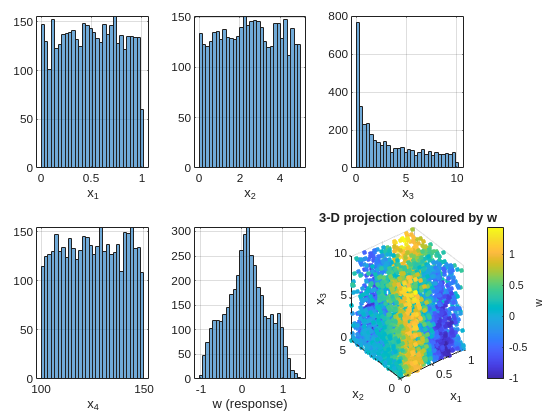
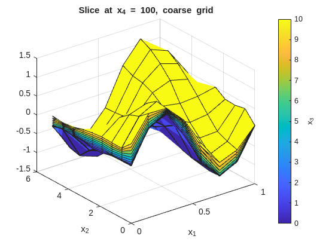
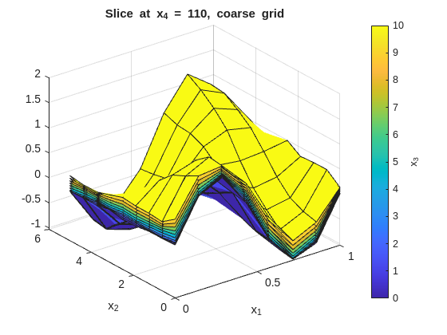
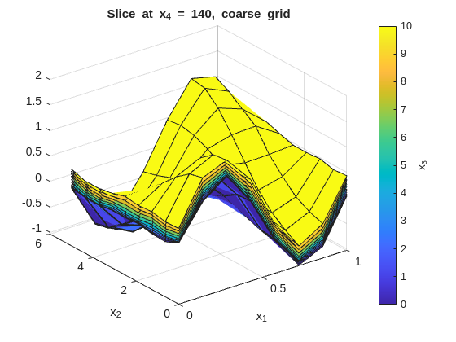
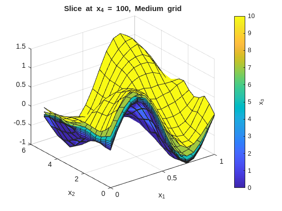
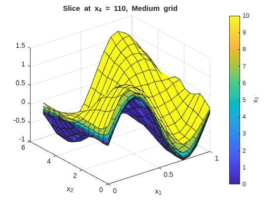
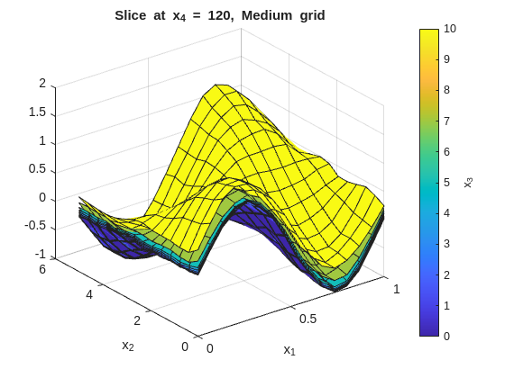
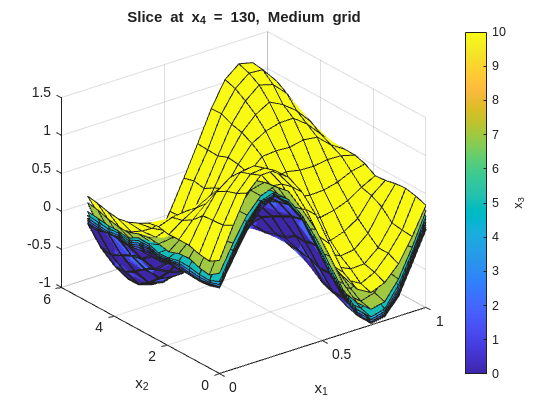
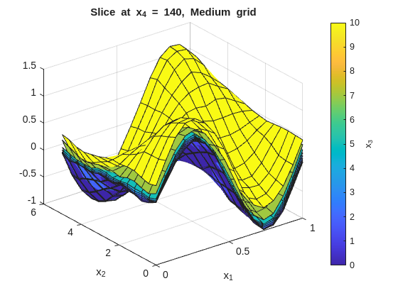

This part shows how regularizeNd extends naturally to 4-D (and higher) inputs. The concepts follow a workflow adapted to a self-contained synthetic dataset so you can run it anywhere.
Practical Goal
Build intuition for how grid size grows from 2D to 4D and beyond.
Apply per-dimension smoothness values based on signal behavior.
Use coarse-to-fine refinement to control runtime and memory.
High-dimensional fitting in regularizeNd is still the same fidelity-plus-smoothness least-squares model used in lower dimensions, but grid cardinality grows multiplicatively. The key strategy is to stay coarse first, tune smoothness, then selectively refine dimensions that matter most adding points only where needed to capture variation without exploding the total grid size.
The Core Challenge of High Dimensions
Adding a dimension does not add to grid count — it multiplies it. For a grid of \(N\) points per dimension across \(d\) dimensions, the total node count is \(N^d\):
Nodes/dim
2-D
3-D
4-D
5-D
5
25
125
625
3 125
10
100
1 000
10 000
100 000
20
400
8 000
160 000
3 200 000
30
900
27 000
810 000
24 300 000
This is the curse of dimensionality for grid-based methods. The practical consequence is that you must be intentional about how many points you allocate to each dimension.
The linear system solved internally has:
columns = total grid nodes = \(\prod_i N_i\)
rows = data count + regularization equations ≫ columns (overdetermined)
nonzeros ∝ \(2^d \cdot N_\text{data}\) (for linear interpolation)
The reference 4-D example in a05_example_4D_input.m uses 30 240 grid nodes, producing a system with 250 505 rows and 2 539 252 nonzero elements, which solves in ~3.5 seconds on a 2019 laptop (32 GB RAM, i7 CPU).
The Synthetic 4-D Dataset
The synthetic response is: dens \[
w = \sin(2\pi x_1) \cdot \cos(\pi x_2) + 0.4 \, x_3^2 + 0.1 \, x_4 + \varepsilon
\]
where \(\varepsilon \sim \mathcal{N}(0, 0.05^2)\), normally distributed with 0.05 standard deviation. The four inputs span different physical scales and have deliberately different levels of variation — motivating per-dimension smoothness.
clc;clear;closeall;rng(2025);% --- scatter data ---N=4000;x1=rand(N,1);% [0, 1] — fast oscillationx2=5*rand(N,1);% [0, 5] — moderate variationx3=10*rand(N,1).^2;% [0, 10] — nonlinear fill (denser near 0)x4=100+50*rand(N,1);% [100,150] — slow rampnoise=0.05*randn(N,1);w=sin(2*pi*x1) .*cos(pi*x2/5) +0.4*(x3/10).^2+0.1*(x4-100)/50+noise;% --- inspect each input marginal ---figuretiledlayout(2,3,'TileSpacing','compact','Padding','compact')inputs= {x1,x2,x3,x4,w};iLabels= {'x_1','x_2','x_3','x_4','w (response)'};fork=1:5nexttilehistogram(inputs{k},30)xlabel(iLabels{k});gridonendnexttilescatter3(x1,x2,x3,12,w,'filled')xlabel('x_1');ylabel('x_2');zlabel('x_3')h=colorbar;ylabel(h,'w')title('3-D projection coloured by w')

The x3 marginal is right-skewed because we drew from a squared-uniform distribution. This will motivate non-uniform grid spacing in that dimension later.
Coarse Grid: Getting Oriented
Always start coarse. A coarse grid tells you whether the smoothness values are in the right ballpark before committing to a fine grid.
% --- coarse grid (fast) ---x1GridCoarse=linspace(0,1,8);x2GridCoarse=linspace(0,5,9);x3GridCoarse=linspace(0,10,10);% uniform for nowx4GridCoarse=linspace(100,150,6);xGridCoarse= {x1GridCoarse,x2GridCoarse,x3GridCoarse,x4GridCoarse};% per-dimension smoothness:% x1 has fast oscillation → small smoothness% x2 moderate → moderate% x3 slow quadratic → larger smoothness is fine% x4 very slow ramp → largest smoothnesssmoothness= [1e-3,1e-3,1e-2,2e-2];ticwGridCoarse=regularizeNd([x1,x2,x3,x4],w,xGridCoarse,smoothness);fprintf('Coarse grid (%d nodes) solve time: %.2f s\n',numel(wGridCoarse),toc)wFuncCoarse=griddedInterpolant(xGridCoarse,wGridCoarse);
Coarse grid (4320 nodes) solve time: 0.14 s
Inspect the fit with x_1 on the x-axis and x_2 on the y-axis. Each figure fixes one x_4 value and overlays surfaces across the x_3 slices:
% --- 2-D slice: vary x1 and x2, fix x3 and x4 ---onesMatrix=ones(numel(x1GridCoarse),numel(x2GridCoarse))';fori=1:numel(x4GridCoarse)forj=1:numel(x3GridCoarse)wSlice=squeeze(wGridCoarse(:,:,j,i))';ifj==1titleStr=sprintf("Slice at x_4 = %g, coarse grid",x4GridCoarse(i));figure("Name",titleStr);surf(x1GridCoarse,x2GridCoarse,wSlice,x3GridCoarse(j)*onesMatrix);holdon;ylabel(colorbar,"x_3");xlabel('x_1');ylabel('x_2');title(titleStr);elsesurf(x1GridCoarse,x2GridCoarse,wSlice,x3GridCoarse(j)*onesMatrix);endendend



Refine One Dimension at a Time
Increase resolution only in the dimension where the slice shows unresolved detail. You can see this from high residuals or local large gradients even with large smoothness.
% --- moderate grid: refine x1 and x2 where variation is fastest ---x1GridMedium=linspace(0,1,16);x2GridMedium=linspace(0,5,14);x3GridMedium= [0,1,2,3,4,5,7,10];% denser near 0 to match data fillx4GridMedium=linspace(100,150,6);gridMedium= {x1GridMedium,x2GridMedium,x3GridMedium,x4GridMedium};fprintf('Medium grid node count: %d\n',prod(cellfun(@numel,gridMedium)))ticwGridMedium=regularizeNd([x1,x2,x3,x4],w,gridMedium,smoothness);fprintf('Medium grid (%d nodes) solve time: %.2f s\n',numel(wGridMedium),toc)wFuncMedium=griddedInterpolant(gridMedium,wGridMedium);
Medium grid node count: 10752
Medium grid (10752 nodes) solve time: 0.39 s
Notice the non-uniform x3GridMedium spacing. Because x3 data is denser near 0, placing more grid nodes there improves fidelity in the data-rich region while keeping node count low elsewhere.
% --- 2-D slice: vary x1 and x2, fix x3 and x4 ---onesMatrix=ones(numel(x1GridMedium),numel(x2GridMedium))';fori=1:numel(x4GridMedium)forj=1:numel(x3GridMedium)wSlice=squeeze(wGridMedium(:,:,j,i))';ifj==1titleStr=sprintf("Slice at x_4 = %g, Medium grid",x4GridMedium(i));figure("Name",titleStr);surf(x1GridMedium,x2GridMedium,wSlice,x3GridMedium(j)*onesMatrix);holdon;ylabel(colorbar,"x_3");xlabel('x_1');ylabel('x_2');title(titleStr);elsesurf(x1GridMedium,x2GridMedium,wSlice,x3GridMedium(j)*onesMatrix);endendend





Checking Residuals
Residuals are the quickest global quality indicator. Look for patterns in the residuals versus each input dimension or versus the true response — systematic structure indicates underfitting (grid too coarse or smoothness too large), while residuals that are roughly zero with no heavy tails indicate the smoothness and grid combination is adequate.
In this data set, the residuals from the medium grid fit should be roughly zero with no obvious patterns, indicating that the grid resolution and smoothness are capturing the main structure of the function without overfitting the noise. TIP: In other data sets, with bias present or high noise, some patterns or large residuals is to be expected. A decent fit rather than a great fit is the compromise when dealing with noisy or biased data.
The same slice-plot approach can be reused to compare several smoothness settings. Here the page regenerates the x_1-x_2 slice families for three representative smoothness choices:
The tight (low smoothness) plots will show more local variation across the x_3 overlays. The smooth (high smoothness) plots will flatten those differences. The baseline should preserve the main structure without overreacting to noise.
Grid Design Rules of Thumb
These rules follow directly from the a05_example_4D_input.m comments and workflow:
Start coarse (5–10 nodes/dim) and verify the smoothness range before refining.
Non-uniform spacing where the data or function has concentrated structure — denser nodes in the dense-data region, sparser in sparse regions.
Per-dimension smoothness — assign smaller values to fast-varying dimensions and larger values to slow-varying ones.
Budget the node product — for a direct solver, a practical ceiling is roughly 1e6–10e6 total grid nodes before switching to an iterative solver (see Part 7). This number will depend on your computer resources (RAM and CPU). 1e6–10e6 is a rough orientation for a modern laptop with 32 GB of RAM and 1 min solve time; adjust downward if you have less memory or slower CPU.
Residuals before slices — a bad residual histogram reveals a grid/smoothness problem faster than any visual surface inspection.
Grid must span the data — regularizeNd throws an error if any data point falls outside xGrid. Add a small buffer if using min or max ever fails: linspace(min(x)-eps(min(x)), max(x)+eps(max(x)), N).
Different number of nodes per dimension — When working with higher-dimensional inputs, having
different number of nodes per dimension will reveal errors in indexing or array reshaping that might otherwise be hidden if all dimensions have the same node count. Using the same number of nodes in each dimension can mask bugs in how the multi-dimensional arrays are being indexed or reshaped; varying the node counts per dimension helps catch these issues early.